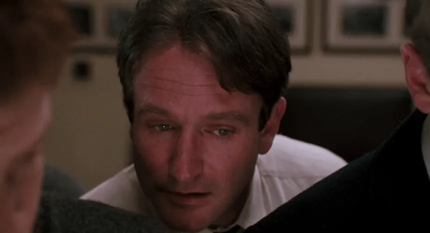

— O Captain, my Captain. Who knows where that comes from? Anybody? Not a clue? It's from a poem by Walt Whitman about Mr. Abraham Lincoln. Now in this class you can either call me Mr. Keating, or if you're slightly more daring, O Captain my Captain.
— They're not that different from you, are they? Same haircuts. Full of hormones, just like you. Invincible, just like you feel. The world is their oyster. They believe they're destined for great things, just like many of you. Their eyes are full of hope, just like you. Did they wait until it was too late to make from their lives even one iota of what they were capable? Because you see, gentlemen, these boys are now fertilizing daffodils. But if you listen real close, you can hear them whisper their legacy to you. Go on, lean in. Listen. You hear it?... Carpe... Hear it?... Carpe. Carpe diem. Seize the day, boys. Make your lives extraordinary.
